Microsoft AB-100 Agentic AI Exam Prep
1 Prep Course for AB100
WHAT YOU'LL GET FROM THIS COURSE
- Foundational Knowledge — Understand agentic Al architecture and mechanics
- Practical Skills — Design workflows, patterns, orchestration
- Exam Alignment — Every lecture maps to AB-100 exam blueprint
- Confidence — Understand the why behind each concept
COURSE STRUCTURE (8 SECTIONS)
Agentic Ai can handle complex problems:
- • Customer support escalation
- • Contract negotiation
- • Supply chain optimization
- • Strategic planning
- • Safety guardrails
- • Governance frameworks
- • Continuous monitoring
- • Ethical oversight
HOW TO ALLOCATE YOUR TIME
- Deploy/Govern/Secure (40-45%) → ~40% of study time
- Plan + Design (50-60%) → ~45% of study time
- Platform + Evaluation + Scenarios → ~15% of study time
KEY TAKEAWAYS
-
- Format: 80 Q's, 90 min, adaptive, ~70% to pass
-
- Pacing: Simple Q's are quick; scenarios take 2-4 minutes
-
- Question types: Multiple choice, multi-select, scenario, drag-drop
-
- Competencies: 5 areas; governance is the heaviest
-
- Focus: Business reasoning & safe deployment, not coding
WHAT THE EXAM TESTS
IS Testing:
- • Real-world scenario reasoning
- • Trade-offs (speed vs. safety, autonomy vs. control)
- • Best practices for design & deployment
- • Business problem mapping
- • Governance & ethical thinking
IS NOT Testing:
- • Deep ML theory or mathematics
- • Coding or programming ability
- • Model training or fine-tuning
- • Specific tool APIs or syntax
DOMAIN AREAS (3 TOTAL)
- Plan Al-Powered Business Solutions — 25-30%
- Design Al-Powered Business Solutions — 25-30%
- Deploy Al-Powered Business Solutions — 40-45%
(includes governance, evaluation, monitoring)
EXAM BASICS
- • Total questions: 80
- • Time limit: 90 minutes
- • Passing score: 700/1000 (~70%)
- • Question types: Multiple choice, scenario, drag-and-drop
- • Format: Adaptive (difficulty adjusts to your performance)
- • Cost: $165 USD
- • Delivery: Computer-based, proctored online
Average time per question: ~1 min 7 sec (but scenarios take longer)
Exam Insight
The AB-100 exam is testing whether you can:
- Plan solutions that fit business needs
- Design systems that work
- Deploy & Govern them safely
- Measure success
- Align with real-world business goals
NOT testing deep ML knowledge or coding ability
2 Microsoft AI Landscape
What is Agentic AI, Really?
- Define the key terms
- Explore what's happening in the industry
- Set the foundation for everything that follows
What Is Agentic AI?
Agentic AI = Goal + Reasoning + Tools + Action
- Goal — the target outcome
- Reasoning — decides what to do next
- Tools — APls, workflows, data sources
- Action — executes steps to reach the goal
KEY TERMS (QUICK DEFINITIONS)
- Agent — decision-maker that chooses actions
- Tools — capabilities the agent can invoke
- Orchestration — coordinates steps and tool calls
- Planning — breaks goals into sub-tasks
- Memory — retains context over time
- Guardrails — safety and compliance constraints
ANALOGY: AGENT AS PROJECT MANAGER
Receives a goal
- Defines success criteria
- Prioritizes tasks
Breaks it down
- Creates a plan
- Delegates steps
Uses tools
- Calls systems and APls
- Requests info from teams
Adapts
- Updates plan
- Stays within guardrails
WHAT AGENTIC AI IS NOT
- Not just a chatbot — chat can be part of an agent
- Not traditional automation — "if X then Y" only
- Not a standalone model — the model is one component
BUSINESS IMPACT
- Faster decisions through automated reasoning
- Reduced operational load via delegated tasks
- Scalable workflows that adapt to variability
- Better alignment with business goals
Guardrails are constraints that keep agents safe, compliant, and aligned
KEY TAKEAWAYS
- Agentic Al is goal-driven, tool-using, action-taking Al.
- Know the terms: agent, tools, orchestration, planning, memory, guardrails.
- It's not just chat or automation — it's decision + action + adaptation.
- The exam emphasizes business impact and safe deployment.
2-1 Microsoft AI Landscape: Copilot Studio vs. AI Foundry
- Agentic solutions are rarely built on a single tool
- Exam scenarios test your ability to select the right platform mix
- Focus: Business alignment, governance, and scale — not tool mastery
Key platforms:
- Copilot Studio → No-code agent building
- Azure Al Foundry → Custom models & advanced orchestration
- Power Platform → Low-code flows & connectors
- Dynamics 365 → Industry-specific business apps
- Microsoft 365 Copilot → Productivity & extensibility
PLATFORM COMPARISON TABLE
| Platform | Strength | Role | Best For | Weight |
|---|---|---|---|---|
| Copilot Studio | No-code agent builder | Task, autonomous, prompt | Quick prototyping | High |
| Azure AI Foundry | Custom models, fine-tune | Advanced reasoning, multi | Complex, scalable agents | High |
| Power Platform | Connectors, flows | Data grounding, orchestration | Low-code workflows | Medium |
ECOSYSTEM INTEGRATION FLOW
- Copilot Studio agents call Azure Al Foundry models via MCP
- Power Automate triggers Dynamics actions
- Microsoft 365 Copilot extends with custom agents from Copilot Studio
Agentic Solution
- Copilot Studio agents call Foundry models via MCP
- Power Automate triggers Dynamics actions
- Microsoft 365 Copilot extends with custom agents from Copilot Studio
KEY TAKEAWAYS
- Microsoft ecosystem is modular — mix platforms for the best fit
- AB-100 tests platform selection based on business requirements
- Always consider governance, scale, and cost in your answers
- Know when to pick speed (Copilot Studio) vs. customization (Azure Al Foundry)
2-2 Microsoft AI Agent Types & Capabilities Explained
AB-100 AGENT TYPES
| Agent Type | Autonomy Level | Key Capabilities | Best Microsoft Platform(s) | Typical Use Case |
|---|---|---|---|---|
| Prompt/Response | Low | Responds to user input with reasoning | Copilot Studio, Microsoft 365 Copilot | Chat-based support, simple Q&A |
| Task | Medium | Executes bounded tasks with tools | Copilot Studio + Power Automate | Escalation, data lookup, approval workflows |
| Autonomous | High | Independent planning, multi-step actions | Copilot Studio + Azure AI Foundry Agent Service | Background monitoring, proactive workflows |
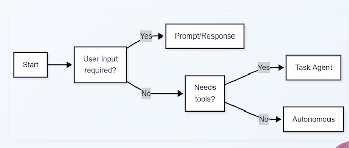
CAPABILITIES BY PLATFORM
- Copilot Studio: All three types + topics, actions, connectors
- Azure Al Foundry: Enhances autonomous agents with custom models & multi-agent orchestration
- Power Platform: Adds grounding & flows for task/autonomous agents
- Dynamics 365: Prebuilt task & autonomous agents (e.g., Sales Copilot)
- Microsoft 365 Copilot: Primarily prompt/response, extensible to task
KEY TAKEAWAYS
- Know the three agent types: prompt/response, task, autonomous
- Autonomous agents are powerful but require strong guardrails
- Exam favors balancing autonomy with governance
2-3 Copilot Studio Core Concepts: Topics, Tools & Connectors
$ COPILOT STUDIO OVERVIEW
- No-code/low-code platform for building agents
- Core building blocks: Topics, Tools, Connectors, Knowledge
- Supports all agent types (prompt/response, task, autonomous)
Exam focus: Designing agents in Copilot Studio (topics → tools → flows)
CORE COMPONENTS TABLE
| Component | Purpose | Exam Relevance |
|---|---|---|
| Topics | Conversation scenarios & branching | Defines agent behavior & user interaction |
| Tools | Connectors, API calls, prompts, agent flows | Enables agent to take real-world actions |
| Connectors | 1000+ prebuilt (Dynamics, Dataverse, etc.) | Grounds agents in enterprise data |
| Knowledge | Grounding sources (Dataverse, SharePoint, web) | Prevents hallucinations, improves accuracy |
Example: Topic "Escalate Issue" → Tool "Create Case in Dynamics" → Connector to Dynamics 365
AGENT DESIGN FLOW IN COPILOT STUDIO
GOVERNANCE & SECURITY IN COPILOT STUDIO
- Built-in guardrails (content filters, data loss prevention)
- Environment isolation (dev/test/prod)
- Role-based access control
KEY TAKEAWAYS
- Copilot Studio is the primary no-code agent builder
- Know the four core components: topics, tools, connectors, knowledge
- Exam emphasizes grounding & guardrails for reliable agents
2-4 Azure AI Foundry Tools & Model Selection
WHAT IS AZURE AI FOUNDRY?
Centralized platform for Al model discovery, hosting, and customization — your model headquarters.
- Model Catalog - Thousands of models: Azure OpenAl (GPT-4), Anthropic Claude, Meta Llama, Mistral, and more
- Fine-Tuning Tools — Adapt models to your specific domain data and industry terminology
- Agent Service — Scalable agent hosting (LangGraph, Semantic Kernel)
Key distinction: Copilot Studio = speed & accessibility.
Azure AI Foundry = deeper customization, scale, and control.
WHEN TO USE AZURE AI FOUNDRY
The exam loves testing this decision point. Use Foundry when:
- Off-the-shelf models lack accuracy for your industry data (financial, medical, legal)
- Dynamic routing needed - route simple queries to cheaper models, complex to premium (cost optimization)
- Multi-agent orchestration or complex custom tool integration required
- Strict data privacy or compliance — full control over where data goes and deployment
Trigger words: domain-specific, fine-tuning, compliance, multi-agents enterprise scale → Think Foundry
FOUNDRY CAPABILITIES FOR AGENTS
Agent Service hosts your agents with built-in scaling, observability, and cost tracking.
- Dynamic model routing — Cost optimization at scale
- Multi-agent orchestration — Agent2Agent protocol support
- Built-in telemetry - Performance metrics and cost tracking
- Tool integration via MCP — Expose agents securely to other systems
"Quick deployment" → Copilot Studio.
"Custom reasoning and scale" Azure Al Foundry. The answer depends on what the scenario emphasizes.
KEY TAKEAWAYS
- Azure AI Foundry = custom models + agent hosting at enterprise scale
- Choose Foundry for fine-tuning, dynamic routing, complex workflows, or high-scale needs
- Always weigh against Copilot Studio - simpler is better when it meets requirements
- Foundry is the answer when off-the-shelf isn't enough
2-5 How AI Agents Talk to Each Other: MCP & AgentAgent Protocol
MODEL CONTEXT PROTOCOL (MCP)
MCP — Originated from Anthropic, adopted by Microsoft Agents securely request tools, APIs, or context from MCP servers
- Agent calls MCP server (not direct API endpoints)
- MCP server acts as secure intermediary
- Build your own with Azure Functions or use existing servers
WHY MCP? 🧑💻🧑💻🧑💻
- Secure Access: Central control over what agents can call
- Auditability All tool calls logged and traceable
- Reusability Share MCP servers across multiple agents
- Interoperability Works across Copilot Studio, Foundry, custom code
MCP EXAM EXAMPLE
"How do you let an Azure Al Foundry agent securely access a private database?"
Answer: Register an MCP server that connects to that database
Agent → MCP Server → Database (with proper credentials & access control)
AGENTZAGENT (A2A) PROTOCOL. 👩🏻💻👩🏻💻👩🏻💻
Open protocol — Originated from Google, supported by Microsoft
- MCP： Agent-to-tool communication
- A2A： Agent-to-agent communication
A2A enables agents to communicate, delegate, and collaborate across platform
A2A IN ACTION
Multi-agent workflow example:
- Research Agent → finds relevant documents
- Summarizer Agent → distills key points
- Approver Agent → validates before surfacing to user
Works cross-platform: Copilot Studio + Azure Ai Foundry + custom agents
INTEGRATION EXAMPLE
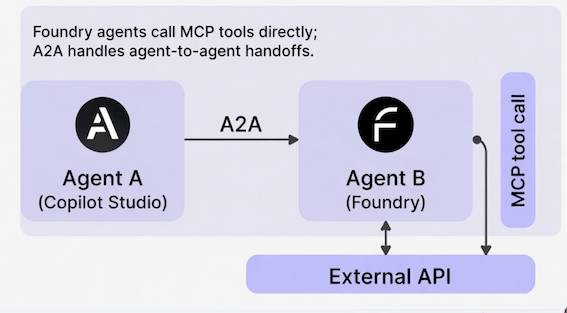
"Orchestrating multiple agents securely" → AZA + MCP
- AZA handles agent-to-agent coordination
- MCP handles agent-to-tool access
- Together, they cover both bases for enterprise scenarios
KEY TAKEAWAYS
- MCP = secure, auditable tool access across agents
- A2A = multi-agent collaboration and delegation
- Use both for governance, scalability, or interoperability questions
- Together, these protocols enable enterprise-grade agentic systems
2-6 Build Custom AI Models in Azure Foundry - Build vs. Buy vs. Extend
THE PRAGMATIC HIERARCHY
- Off-the-shelf models + prompt engineering + RAG
- Only escalate to custom fine-tuning when that fails
"Fails" must mean something specific — not just preference
WHEN TO ESCALATE TO CUSTOM
| Trigger | Example |
|---|---|
| Domain accuracy critical | Legal, financial, medical terminology |
| Privacy/compliance | Data must stay on your infrastructure |
| Scale demands cost optimization | Thousands of queries daily |
| Proprietary patterns | Internal jargon, unique business logic |
DESIGNING CUSTOM MODELS IN FOUNDRY
| Step | Action | Note |
|---|---|---|
| 1 | Select base model from catalog | GPT-4, Llama, etc. |
| 2 | Prepare training data | Clean, label, format — 80% of the work |
| 3 | Fine-tune | Supervised or LoRA adapters |
| 4 | Evaluate rigorously | Auto-scaling |
| 5 | Deploy to Agent Service | Accuracy, safety, bias, hallucinations |
| 6 | Expose via MCP | Other agents can call securely |
ADVANCED FOUNDRY FEATURES
- Dynamic routing — Simple queries → cheap model, complex → premium
- Multi-agent orchestration — Custom models participate via A2A
- Telemetry & governance — Track usage, costs, hallucination rates
KEY TAKEAWAYS
- Custom models solve domain accuracy and compliance gaps
- Azure AI Foundry = fine-tuning, evaluation, and hosting
- Always justify with business trade-offs (cost, governance, performance)
- Evaluate first, deploy second, monitor continuously
- Exam mantra: "Start simple, escalate thoughtfully"
3 Agentic AI Solutions 🤖
3-1 Requirement Analysis for Agentic AI Solutions
WHY REQUIREMENT ANALYSIS MATTERS
- First step in the "Plan" domain (25-30% of the exam)
- Exam scenarios: "A company wants to automate X — should they use agents?"
- Goal: Determine if agentic Al is the right fit vs. traditional automation
Three key questions:
- What is the business goal?
- What are the constraints (budget, timeline, regulation, data)?
- Does the task need adaptive, multi-step, tool-using
GOOD FIT FOR AGENTIC AI
Characteristic
- Multi-step, decision-heavy tasks： Customer escalation with research
- Ambiguous, variable processes： Supply chain exception handling
- Requires calling tools or APIs： Query multiple systems and act on results
- High compliance needs (with guardrails)： Financial decision support
Purely repetitive, rule-based tasks ： Better Alternative： Power Automate flow
Simple Q&A with no follow-up action： Standard Copilot or FAQ bot
Static, single-step processes： Traditional workflow automation
REQUIREMENT ANALYSIS FRAMEWORK
Best answers identify goal first, then constraints, then justif not) with trade-offs.
Business Goal -> Constraints & Risks -> Agentic Fit -> Recomendedd Solutuon
RISK ASSESSMENT FRAMEWORK
| Dimension | Question | Example (Contract Review Agent) |
|---|---|---|
| Likelihood | How probable is this risk? | Data staleness — Medium |
| Impact | How severe if it occurs? | Hallucination on legal clause — High |
| Mitigation | What reduces risk? | Human review for flagged items |
KEY TAKEAWAYS
- Always start with business goal and constraints
- Agentic shines in adaptive, multi-step, tool-dependent processes
- Assess risks early — likelihood, impact, mitigation
- Exam rewards "Is agentic the right tool?" reasoning
3-2 Data Grounding Readiness for AI Agents - Quality, relevance, availability
WHY GROUNDING MATTERS IN AB-100
- Ungrounded agents make up answers — they hallucinate
- Exam scenarios test: "Is the data ready? What are the risks if not?"
- Grounding = giving agents real, relevant context to work with
Three dimensions to assess:
- Quality — Accurate, complete, up-to-date
- Relevance — Matches the agent's tasks and use cases
- Availability — Accessible securely, quickly, and reliably
GROUNDING SOURCES IN MICROSOFT ECOSYSTEM
- Copilot Studio Knowledge — SharePoint, Dataverse, web
- Azure Al Foundry — Custom retrieval pipelines, vector databases
- Power Platform — Connectors to 1000+ sources
- Dynamics 365 / M365 — Native grounding in CRM/ERP data
- Planning focus: Assess gaps now; architect the integration in Lecture 8.
Exam Insight
Best answers assess grounding gaps first, then recommend fixes.
KEY TAKEAWAYS
Poor grounding = unreliable agents → always assess quality/relevance/availability
Focus on identifying gaps during planning; architecture comes later
Exam rewards proactive risk identification in planning
3-3 AI Adoption Strategy - Cloud Adoption Framework for AI
CLOUD ADOPTION FRAMEWORK (CAF) FOR AI OVERVIEW
- Microsoft's structured roadmap for Al adoption
- Phases: Strategy → Plan → Ready → Adopt → Govern
- Applies to agentic Al: Identify use cases, align tech, scale responsibly
Exam Insight
Scenarios test strategic planning (e.g., "How should this company adopt agentic solutions organization-wide?").
CAF FOR AI PHASES
| Phase | Key Activities | AB-100 Relevance |
|---|---|---|
| Strategy | Define vision, identify high-impact use cases, set metrics | Align AI to business goals |
| Plan | Assess readiness, prioritize use cases, build roadmap | Requirement analysis, data readiness |
| Ready | Set up environments, governance, security baselines | Infrastructure and compliance foundations |
| Adopt | Pilot, measure, then scale agents | Proving value before full rollout |
| Govern | Responsible AI, monitoring, compliance | Ongoing governance (heaviest exam weight) |
BUILDING AN AI CENTER OF EXCELLENCE (COE)
- Cross-functional team: Business, IT, data, legal
- Responsibilities: Use case intake, standards, governance
- Microsoft tools: Purview for compliance, Azure Al Foundry for experimentation
Exam Insight
Strong answers include CoE for sustainable adoption.
DESIGNING AN EFFECTIVE PILOT
| Element | Description | Example |
|---|---|---|
| Scope | Bounded use case | Tier 1 support, NA team only |
| Duration | Fixed timeframe | 6–8 weeks |
| Success Metrics | Defined before launch | Resolution rate, CSAT, handle time |
| Go/No-Go | Clear thresholds | Resolution > 70%, CSAT > 4.0 |
| Feedback Loop | Continuous input | Weekly retros + surveys |
Exam Insight
Structured pilot design with success criteria beats "deploy and monitoring"
KEY TAKEAWAYS
- Follow CAF phases: Strategy → Plan → Ready → Adopt → Govern
- Start with high-value use cases and responsible AI
- Design pilots with clear scope, metrics, and go/no-go criteria
- Exam rewards structured, business-aligned strategies
3-4 Build vs. Buy vs. Extend Decisions
DECISION FRAMEWORK: WHEN TO CHOOSE
Exam Insight
Most enterprise projects are "Extend" — buy the foundation, customize on top.
| Approach | When to Choose | AB-100 Example |
|---|---|---|
| Buy | Prebuilt agents meet 80–90% of needs | Use Copilot for Sales |
| Extend | Prebuilt covers most; minor tweaks needed | Extend M365 Copilot with custom topic |
| Build | Unique requirements, proprietary logic | Custom autonomous agent in Foundry |
DECISION FRAMEWORK: TRADE-OFFS
| Approach | Pros | Cons |
|---|---|---|
| Buy | Fast, governed, vendor-supported | Limited customization |
| Extend | Speed + tailoring | Still constrained by base platform |
| Build | Full control, high differentiation | Highest cost, longest timeline, you own maintenance |
Exam Insight
Best answer is pragmatic—extend prebuilt first, build only when justified
KEY TAKEAWAYS
- Build when the problem is truly unique or you have deep expertise
- Buy when the vendor solution covers 80%+ of your needs
- Extend is usually the answer in enterprise — take a vendor solution and adapt it )
- Always factor in maintenance cost and team expertise, not just initial delivery
3-5 ROI & Total Cost of Ownership Analysis
WHY ROI/TCO MATTERS IN AB-100
- "Plan" domain requires quantifying business value
- Exam scenarios: "Is this agent worth the investment?"
- ROI - Return on Investment: Measures value vs. cost
- TCO - Total Cost of Ownership: All costs over lifecycle
Key formulas:
- ROI = (Benefits - Costs) / Costs × 100
- TCO includes all lifecycle costs (dev, hosting, monitoring, tuning)
Focus: Measurable outcomes (time saved, revenue lift, error reduction)
TCO COST CATEGORIES
| Category | Examples | Typical % of TCO |
|---|---|---|
| Development | Design, build, testing | 20–30% |
| Model & Inference | Token usage, routing, fine-tuning | 25–40% |
| Infrastructure | Azure AI Foundry hosting, storage | 10–20% |
| Governance & Ops | Monitoring, tuning, compliance, security | 10–20% |
| Change Management | Training, adoption, process redesign | 5–15% |
REDUCING TCO
| Category | Mitigation Strategy |
|---|---|
| Development | Use Copilot Studio and prebuilt agents |
| Model & Inference | Dynamic routing, smaller models for simple tasks |
| Infrastructure | Optimize scale, reserved capacity |
| Governance & Ops | Microsoft Purview, automated alerts |
| Change Management | Center of Excellence support, pilot programs |
ROI CALCULATION EXAMPLE
Customer support automation:
- Benefits:
2.15M/year (labor reallocation + reduced churn) - Year 1 TCO: 600K (development + inference + ops)
- ROI: (2.15M - 600K) / 600K = 258%
Exam Insight
Include all cost categories. Show phased thinking: pilot first, expand after proving value.
KEY TAKEAWAYS
- TCO includes development, inference, infrastructure, governance, and change costs — not just tokens
- ROI is benefits minus costs, divided by costs — use realistic, quantifiable numbers
- Show phased approaches to reduce risk and demonstrate value early
- Identify cost reduction opportunities like model routing and reusable components
3-6 Prompt Library & Prompt Engineering Guidelines
WHY PROMPT ENGINEERING MATTERS IN PLANNING
- Core to reliable agent behavior (especially prompt/response & task agents)
- Poor prompts → inconsistent, unsafe outputs
- Exam tests: "How to ensure consistent quality across agents?"
Four core techniques:
- Chain-of-thought prompting
- Few-shot examples
- Role prompting
- Guardrails
PROMPT STRUCTURE TECHNIQUES
| Technique | Description | Example |
|---|---|---|
| Be specific & clear | Define goal, constraints, output format | "Summarize in bullet points, max 5 items" |
| Chain-of-thought | Instruct step-by-step reasoning | "Think step by step before answering" |
| Few-shot examples | Provide 2–3 input/output examples | Sample customer query response |
PROMPT BEHAVIOR CONTROLS
Exam Insight
Combine techniques: role prompt + guardrails + few-shot examples for production-aualitv agents.
BUILDING A PROMPT LIBRARY
- Centralized repo (SharePoint, Azure DevOps)
- Categories: Use case, agent type, tone
- Version control + testing results
- Reuse across topics/actions in Copilot Studio
PROMPT GOVERNANCE FRAMEWORK
Exam Insight
Strong answers recommend libraries with versioning, ownership, and governance.
| Element | Description | Responsibility |
|---|---|---|
| Ownership | Every template has an accountable owner | CoE or team lead |
| Review process | Pre-production review for guardrails & edge cases | Peer + CoE review |
| Testing cadence | Periodic effectiveness checks | Quarterly minimum |
| Cross-agent consistency | Shared templates for common behaviors | CoE-managed library |
KEY TAKEAWAYS
- Understand core techniques: chain-of-thought, few-shot, role prompting, guardrails
- Build a centralized prompt library to ensure consistency across agents
- Govern prompts with ownership, review processes, and versioning
- Tie prompt governance to your Center of Excellence and organizational strategy
3-7 Model Routing & When to Use Custom Models
WHAT IS MODEL ROUTING?
- Match each task to the right model based on cost, quality, and speed
- Simple tasks → lightweight models (lower cost, faster)
- Complex tasks → premium models (higher accuracy)
- Azure Al Foundry enables automatic, dynamic routing
Definition
Model routing — dynamically selecting the best model for each query based on complexity, cost, latency, and accuracy requirements
ROUTING IN ACTION
Customer support agent — same system, different queries:
Over thousands of calls, intelligent routing saves significantly while maintaining quality where it matters.
| Simple Query | Complex Query | |
|---|---|---|
| Customer says | "My password isn't working" | "Enterprise feature X broke after last update" |
| Route to | Lightweight model | Premium model |
| Response | Scripted reset instructions | Contextual troubleshooting |
| Cost per call | Fraction of a cent | A few cents |
ROUTING CRITERIA
- Query Complexity — Simple yes/no → lightweight; open-ended analysis → premium
- Latency — Time-sensitive tasks may justify a faster (costlier) model
- Cost Targets — Per-query cost thresholds built into routing rules
- Accuracy Requirements — Safety-critical or compliance decisions need your best model
Real routing policies combine all four dimensions based on business priorities
CUSTOM MODEL TRIGGERS
| Trigger | Example | Why It's Worth It |
|---|---|---|
| Domain accuracy is mission-critical | Legal contract analysis | Hallucination risk = lawsuits |
| Compliance demands isolation | Healthcare data residency | Patient data can't leave environment |
| High-volume ROI | 1M emails/year, 2% accuracy gain = $500K | $50K fine-tuning pays back in months |
Exam Insight
Most of the time, routing and prompt engineering are enough. Custom models are the exception, not the rule.
THE DECISION PROCESS
Escalation ladder — start at the bottom, climb only with evidence:
- Model routing — match tasks to models by complexity and cost
- Advanced prompting & grounding - improve accuracy without custom training
- Fine-tuned / custom models — only when metrics show persistent gaps
Exam Insight
On the exam, the best answer almost always starts simple and escalates only with data to justify it
KEY TAKEAWAYS
- Model routing balances cost and performance dynamically — use it as your first move
- Custom models solve specific problems only when routing and prompting aren't enough
- Justify model decisions with metrics: accuracy, cost savings, compliance needs
- On the exam, show you understand the trade-offs and start with the simplest effective approach
3-8 Organizing Business Data for AI Interoperability
THE DATA SILO PROBLEM
- Agents need data from multiple systems (CRM, ERP, knowledge bases, finance)
- Siloed data with different schemas and formats → inconsistent context
- Inconsistent context → hallucinations and poor decisions
- Interoperability is an ongoing architecture practice, not a one-time fix
Exam Insight
Lecture 2 assessed data readiness. This lecture architects the solution.
THREE PRACTICES FOR INTEROPERABILITY
| Trigger | Example | Why It's Worth It |
|---|---|---|
| Domain accuracy is mission-critical | Legal contract analysis | Hallucination risk = lawsuits |
| Compliance demands isolation | Healthcare data residency | Patient data can't leave environment |
| High-volume ROI | 1M emails/year, 2% accuracy gain = $500K | $50K fine-tuning pays back in months |
MICROSOFT DATA TOOLS
| Tool | Role |
|---|---|
| Microsoft Purview | Catalogs all data across Azure, SQL, SharePoint — unified map with lineage and ownership |
| Dataverse | Common data platform with built-in governance — your critical business entities live here |
| Connectors & MCP | Pull data from legacy systems into Dataverse; Model Context Protocol standardizes agent-to-system interaction |
INTEROPERABILITY IN PRACTICE
Healthcare organization with three separate systems:
- Patient data → electronic health record system
- Insurance data → claims system
- Billing data → finance system
Solution: Sync critical fields (patient ID, insurance status, balance) into Dataverse daily. Set permissions per role — front-desk agent sees insurance status but not medical records.
KEY TAKEAWAYS
- Siloed data causes agent failures — interoperability is foundational
- Semantic organization means consistent terminology across all systems
- Leverage Purview for cataloging, Dataverse for critical data, connectors for integration
- Governance and access control prevent compliance violations
3-7 Use Cases for Prebuilt Agents and Customized Small Language Models
PREBUILT AGENT LINEUP
Agent
Copilot for Sales： Deal management — summarizes relationships, suggests next actions, drafts emails from CRM data
Copilot for Service： Frontline support — suggests solutions from knowledge articles, drafts responses, handles escalations
Copilot for M365: Productivity — meeting summaries, email drafting, document creation in Office
Exam Insight
Prebuilt agents are your fastest path to demonstrating value — ideal for pilots
WHEN PREBUILT FITS (AND WHEN IT DOESN'T)
Prebuilt excels when:
- Use case maps to standard CRM, ERP, or productivity workflows
- You need fast time-to-value for pilots
- You can customize prompts in Copilot Studio for your context
Prebuilt falls short when:
- Highly specialized industry workflows
- Deeply customized integrations
- Processes that don't map to standard business patterns
That's where you extend prebuilt capabilities — or look at Small Language Models.
WHAT ARE SMALL LANGUAGE MODELS?
- Models like Phi-3 — smaller, faster, cheaper than large models
- Fine-tune in Azure Al Foundry for domain-specific tasks
Analogy: GPT-4 is a truck — massive, powerful, hauls anything. Phi-3 is a scooter - nimble, efficient, and faster for most daily tasks.
Definition
SLM (Small Language Model) — a compact model optimized for specific tasks, offering lower cost, faster inference, and easier deployment than large models
SLMS IN PRACTICE
Manufacturing: Thousands of sensors streaming data. Need anomaly detection under 100ms. Deploy fine-tuned Phi-3 locally - 50ms response, 40% cost savings, no sensitive data leaves the plant.
Financial services: Proprietary trading rules. Fine-tune Phi-3 on your domain language and deploy internally — fully governed, faster, and cheaper than a generic large model.
Exam Insight
"Start with prebuilt. Evaluate SLMs for cost, privacy, or edge requirements. Custom large models only as a last resort." — That's the pattern the exam rewards.
KEY TAKEAWAYS
- Prebuilt agents are your first choice — fast, governed, lower cost )
- Small Language Models excel for specialized, privacy-sensitive, high-volume tasks
- Custom large models are the last resort when neither prebuilt nor SLMs suffice
- Always ask: "What's the simplest solution that solves the problem?"
4 Agent Design
4-1 Agentic Al System Components & Design Patterns
THE SIX CORE COMPONENTS
| Component | What It Does | Example |
|---|---|---|
| Perception | Captures input — queries, events, data | User question in Teams, invoice arriving in D365 |
| Reasoning | LLM plans next steps (chain-of-thought, ReAct) | "I need to check inventory before answering" |
| Memory | Short-term (context window) + long-term (Dataverse) | Remembering a customer's prior requests |
| Tools | Connectors, APIs, flows the agent can call | Query CRM, send email, update a record |
| Execution | Runtime that hosts and runs the agent | Copilot Studio, Foundry Agent Service |
| Guardrails | Safety, compliance, escalation rules | "Escalate if amount exceeds $5,000" |
HOW COMPONENTS WORK TOGETHER
- User input → Perception captures intent
- Reasoning checks Memory and plans next steps
- Agent calls Tools through the Execution runtime
- Reasoning evaluates tool results
- Guardrails validate before responding
- Response delivered — or escalated to a human
Exam Insight
Exam Insight: Scenarios test the full cycle — expect questions where a proposed design is missing a component.
COMPONENTS ON THE MICROSOFT PLATFORM
| Component | Microsoft Implementation |
|---|---|
| Perception | Copilot Studio triggers, Teams messages, Dataverse events |
| Reasoning | Azure OpenAI (GPT-4o, o1), Copilot Studio generative orchestration |
| Memory | Dataverse, Azure AI Search, SharePoint knowledge sources |
| Tools | Power Platform connectors, MCP servers, Power Automate flows |
| Execution | Copilot Studio, Azure AI Foundry Agent Service |
| Guardrails | Content Safety, DLP policies, Entra ID authentication |
THE AUTONOMY SPECTRUM
| Level | How It Works | When to Use |
|---|---|---|
| Copilot mode | Human drives, agent assists | Low trust, high-risk decisions |
| Semi-autonomous | Agent proposes, human approves | Regulatory oversight, medium trust |
| Fully autonomous | Agent acts, human monitors | High-volume, low-risk tasks |
Exam Insight
Exam Insight: Match autonomy to business risk — not technical capability. A single agent can operate at different levels depending on the task.
KEY TAKEAWAYS
- Every agent has six components: perception, reasoning, memory, tools, execution, guardrails
- Know how each component maps to Microsoft platforms
- Match autonomy level to business risk, not technical capability
- AB-100 rewards designs that balance autonomy with governance
4-2 Orchestration Patterns & Multi-Agent Workflows
WHAT IS ORCHESTRATION?
- Coordinating steps, tool calls, and agents into a reliable workflow
- Single agent # orchestration — orchestration starts when multiple steps or agents must cooperate
- Microsoft tools: Copilot Studio flows, Azure Al Foundry Agent Service, Power Automate
Exam Insight
Exam Insight: Scenarios describe a multi-step business process and ask you to choose the right orchestration pattern. Know the tradeoffs.
ORCHESTRATION PATTERNS
| Pattern | How It Works | Tradeoff | Use When |
|---|---|---|---|
| Sequential | Steps run in order, each depends on the previous | Predictable but slow at scale | Loan approval: validate → credit check → decision |
| Parallel | Independent tasks run simultaneously | Fast but must handle partial failures | Claims: pull policy + run fraud check + verify ID at once |
| Hierarchical | Supervisor delegates to specialist agents | Strong governance + scalable | Financial analysis: supervisor → revenue, expense, cash flow specialists |
| Dynamic | Agent reasons about what to do next at each step | Flexible but harder to audit | Ambiguous research: agent decides which tools to call based on findings |
| Event-Driven | Agents react to business events (triggers) | Responsive but requires idempotency | Order placed → check inventory → reorder if low |
Sequential Pattern — Loan Approval
Each step depends on the previous step's output
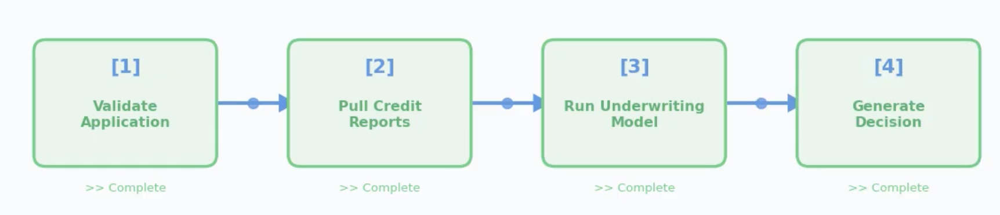
Parallel Pattern - Insurance Claims
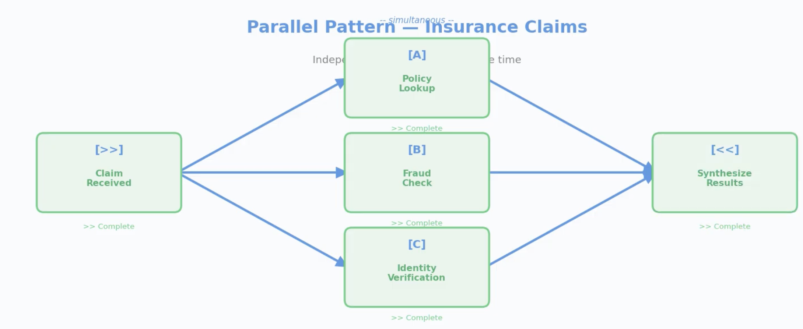
Hierarchical Pattern — Quarterly Performance
Supervisor delegates to specialists, then synthesizes
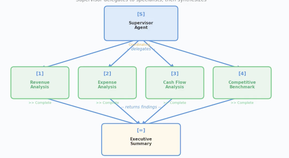
Event-Driven Pattern — Inventory Reorder
Events cascade and agents react
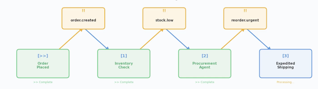
MULTI-AGENT SCENARIO: SUPPLY CHAIN REORDER
- Trigger - Inventory drops below threshold (Dataverse event)
- Supervisor agent receives alert, delegates three parallel tasks
- Demand agent — forecasts 90-day demand from sales data
- Supplier agent — checks lead times and pricing via MCP connector
- Budget agent — verifies spending authority in ERP
- Supervisor synthesizes results and recommends reorder quantity
- If order exceeds $50K → escalate to human buyer for approval
Exam Insight
Exam Insight: Best answers combine patterns — hierarchical at top, parallel within, human-in-the-loop for risk.
AGENT-TO-AGENT COMMUNICATION
| Method | How It Works | Best For |
|---|---|---|
| A2A protocol | Agents call each other directly through Foundry | Fast hand-offs between co-located agents |
| MCP-wrapped tools | Agent B exposed as an MCP tool — Agent A calls it like any tool | Security, auditability, policy enforcement |
| Shared Dataverse | Agent A writes results; Agent B reads them | Async workflows, audit trail, simpler architecture |
GOVERNANCE & RELIABILITY PATTERNS
| Pattern | What It Does | Example |
|---|---|---|
| Circuit breaker | Stops sending requests to a failing agent | Supplier agent fails 5x → stop calling, use cached data |
| Retry with backoff | Retries transient failures with increasing delays | API timeout → retry at 1s, 2s, 4s |
| Timeout | Caps wait time per step | If demand forecast takes >30s, escalate |
| Fallback | Uses a backup if primary fails | Primary model unavailable → use simpler rule-based logic |
| Observability | Logs every handoff, monitors latency, alerts on anomalies | Copilot Analytics + Application Insights |
KEY TAKEAWAYS
- Five patterns: sequential, parallel, hierarchical, dynamic, event-driven — know the tradeoffs
- Real-world solutions combine patterns (hierarchical + parallel + human-in-the-loop)
- AZA for speed, MCP for security, Dataverse for async and audit
- Governance patterns (circuit breakers, timeouts, fallbacks) prevent cascading failure
4-3 Designing Agents in Copilot Studio
TOPICS, TOOLS & FLOWS
| Building Block | Role | Example |
|---|---|---|
| Topics | What the agent understands — descriptions (generative) or trigger phrases (classic) + conversation flow | "Check order status" with input capture, tool call, response |
| Tools | Execute work — connectors, API calls, prompts, agent flows | Fetch order from Dynamics 365, send confirmation email |
| Flows | Orchestrate the sequence — branching, loops, error handling | Order found → show status; not found → escalate to human |
Exam Insight
Exam Insight: Topics handle intent, tools handle execution, flows hand! logic. Keep them separate for maintainability.
TOPIC ORCHESTRATION METHODS
| Method | How It Works | Best For |
|---|---|---|
| Classic NLU | Rule-based trigger phrases matched to topics | Simple, predictable intent matching with known phrases |
| CLU (Conversational Language Understanding) | ML model trained on labeled examples, recognizes intent + entities | Complex intent recognition across varied phrasing |
| Generative orchestration | LLM dynamically selects topics, tools, and knowledge based on context | Flexible, natural conversation where rigid matching fails |
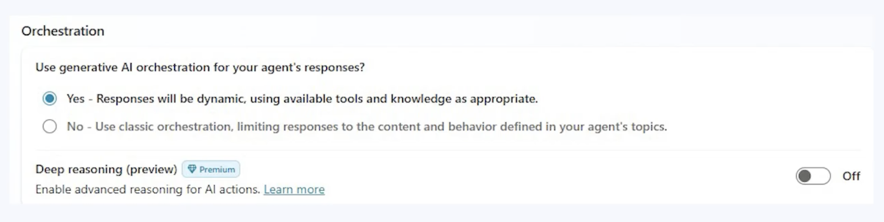
Exam Insight
Exam Insight: Generative orchestration is the default for new agents. It lets the LLM reason about which topic or tool to invoke based on descriptions, rather than relying on fixed trigger phrases.
PROMPT ACTIONS
What: An action where the LLM itself is the tool — no API, no connector
How: Define inputs → write a prompt template → define expected output shape
Shine when you need to transform, summarize, classify, or generate structured content from unstructured input
Definition
Definition: Prompt actions let you use the LLM itself as a tool — just a well-crafted prompt that transforms input into structured output.
PROMPT ACTION EXAMPLES
Support ticket triage:
"Given this support ticket: {ticket_text}, provide a one-sentence summary and classify severity as Low, Medium, or High."
Personalized recommendations:
"Based on this purchase history: {history), recommend three products the customer is likely to buy next. Return as a numbered list with brief reasons."
Fast to build, easy to iterate — you're editing a prompt, not writing code
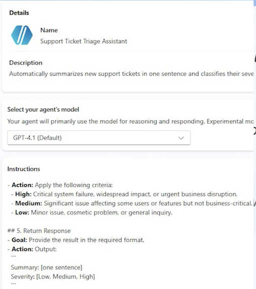
Exam Insight
Exam Insight: Match agent type to task complexity. The exam penalizes over-engineering (autonomous for simple Q&A) and under-engineerin (prompt & response for multi-step workflows).
DESIGN EXAMPLE: IT SUPPORT AGENT
- Topic - "Password Reset" matched by description: "Handles password resets, account unlocks, and login recovery"
- Orchestration — Generative orchestration selects the topic from context
- Tool 1 — Verify employee identity via Entra ID connector
- Tool 2 — Trigger password reset through Power Automate agent flow
- Guardrail — If identity verification fails twice → escalate to help desk
- Response — "Your password has been reset. Check your email for instructions."
Agent type: Task agent — it completes a defined workflow with tools and error handling.
KEY TAKEAWAYS
- Topics handle intent, tools handle execution, flows handle logic - keep them separate
- Know the three orchestration methods: classic NLU, CLU, and generative orchestration
- Prompt actions turn the LLM itself into a tool — no API needed
- Three agent types: prompt & response, task, autonomous — match type to complexity
4-3 Copilot for Sales & Copilot for Service Design
COPILOT FOR SALES — WHAT IT DOES
| Capability | How It Works | Business Impact |
|---|---|---|
| Lead & opportunity scoring | Ranks leads using CRM data (engagement, deal stage) | Reps prioritize high-probability deals |
| Meeting preparation | Summarizes customer history, open issues, deal context | Prepared in 2 minutes, not 20 |
| Email drafting | Generates follow-ups grounded in deal details | 15-minute task becomes 2 minutes |
| Win/loss analysis | Identifies patterns across closed deals | Better coaching and forecasting |
Exam Insight
Exam Insight: Copilot for Sales spans D365, Outlook, and Teams — it bridges CRM and Microsoft 365.
COPILOT FOR SERVICE - WHAT IT DOES
Dynamics 365 Customer Service <——> Dynamics 365 Contact Center
| Capability | How It Works | Business Impact |
|---|---|---|
| Case summarization | Combines emails, calls, and chat into one summary | New reps pick up cases instantly |
| Resolution suggestions | Matches case to similar past cases and KB articles | Faster, more consistent resolution |
| KB article authoring | Drafts articles when reps solve novel issues | Captures knowledge automatically |
| Intelligent routing | Routes by issue type, urgency, and sentiment | Right agent first time |
Exam Insight: Copilot for Service integrates with D365 Contact Center - omnichannel routing across voice, chat, email, and social.
KEY BUSINESS TERMS FOR THE EXAM
- Pipeline — total value of open opportunities across all stages
- Opportunity - a qualified lead with defined revenue potential and stage
- Case — a customer issue tracked from creation to resolution
- SLA (Service Level Agreement) — contractual response/resolution time targets
- CSAT (Customer Satisfaction) — post-interaction satisfaction score
- First Contact Resolution (FCR) — percentage of cases resolved without escalation
Definition
Definition: The exam uses these terms in scenario questions. "A company's CSAT dropped 15% — which Copilot capability addresses this?" Answer: intelligent routing + resolution suggestions.
EXTENDING SALES & SERVICE COPILOTS
Exam Insight: Extend progressively: configure first → Copilot Studio for logic → connectors for data → Power Automate for cross-app flows.
| Extension Level | How | Sales Example | Service Example |
|---|---|---|---|
| Configure | Settings & field mapping | Custom fields in meeting prep | VIP routing rules |
| Copilot Studio | Topics + tools | Credit check before qualification | Sentiment-triggered escalation |
| Connectors | External data | Enrich leads (D&B data) | Pull warranty from ERP |
| Power Automate | Cross-app flows | Deal approval workflow | SLA breach alerts |
DESIGN EXAMPLE: B2B SALES PIPELINE AGENT
- Trigger — Opportunity moves to "Proposal Sent" stage in D365 Sales
- Copilot Studio topic — "Proposal Follow-Up" activates
- Action 1 — Pull customer stakeholder map from Dataverse
- Action 2 — Enrich with latest engagement data from Outlook (via Sales connector)
- Prompt action — "Summarize this stakeholder's concerns and draft a personalized follow-up"
- Guardrail — If deal value >$500K, require manager review before sending
- Result — Rep gets a ready-to-send follow-up in 2 minutes, manager reviews large deals
KEY TAKEAWAYS
- Copilot for Sales spans D365 + Outlook + Teams — it accelerates pipeline, prep, and follow-up
- Copilot for Service integrates with Contact Center for omnichannel case resolution
- Know the business terms: pipeline, opportunity, case, SLA, CSAT, FCR
- Extend progressively: configure → Copilot Studio → connectors → Power Automate
4-4 Copilot for Sales & Copilot for Service Design
FINANCE COPILOT CAPABILITIES
| Capability | What It Does | Design Consideration |
|---|---|---|
| Invoice Matching | 3-way match: invoice → PO → receipt | Auto-approve exact; flag variances |
| Anomaly Detection | Flags unusual amounts, duplicates | Tune thresholds, manage false positives |
| Compliance & Fraud | Checks spending rules, vendor blacklists | Audit trail + human review |
| Accrual Recording | Automates month-end accrual entries | Validate accuracy before posting |
| Variance Analysis | Compares actuals to budget | Configurable tolerance thresholds |
Exam Insight: Finance scenarios test invoice matching + escalation design — know audit trails and approval thresholds.
SUPPLY CHAIN COPILOT CAPABILITIES
| Capability | What It Does | Design Consideration |
|---|---|---|
| Stockout Prediction | Forecasts shortfalls before they happen | Demand data quality, lead-time accuracy |
| Quality Flagging | Detects abnormal defect rates | Threshold config, supplier notification |
| Logistics Optimization | Consolidates shipments, optimizes routes | Cost vs. speed trade-offs |
| Inventory Monitoring | Tracks slow/fast-moving SKUs | Auto-reorder triggers, disposal alerts |
Exam Insight
Exam Insight: SCM agents are autonomous and event-driven — expect questions on confidence thresholds and escalation rules.
CROSS-MODULE ORCHESTRATION EXAMPLE
Scenario: Customer reports a defective product
- Service — Copilot creates case, verifies warranty, determines replacement covered
- Supply Chain — Agent checks nearest warehouse inventory, initiates shipment
- Finance — Agent creates credit memo, schedules vendor chargeback
- Service - Case updated with tracking number, customer notified proactively
Key: Dataverse is the shared backbone — every handoff is logged and auditable.
Exam Insight
Exam Insight: Cross-module scenarios test governance at every handoff — audit trails, error handling, and human escalation.
AGENT CHAT & KNOWLEDGE SOURCES IN F&O
- F&O apps support agent chat — users ask questions about data directly in Finance or SCM
- Extend agents with custom knowledge sources: internal policies, compliance guides, SOPS
- In-app help can be grounded in custom KB articles for role-specific guidance
- Map knowledge sources to roles: AP clerk needs invoice policies, planner needs procurement rules
Exam Insight: Know that F&O agent chat supports custom knowledge sources — the exam tests this as an extension point.
KEY TAKEAWAYS
- Finance Copilot automates invoice matching, anomaly detection, and compliance — w audit trails
- Supply Chain Copilot runs autonomously: stockout prediction, quality flagging, logistic optimization
- Cross-module orchestration across D365 apps uses Dataverse as the shared backbone
- F&O agent chat can be extended with custom knowledge sources for role-specific guidance
4-5 Microsoft 365 Copilot & Teams Agent Design
M365 COPILOT EXTENSIBILITY MODEL
| Extension Type | What It Does | Best For |
|---|---|---|
| Copilot Studio plugin | Custom agent as plugin in Teams/Outlook | Multi-step workflows, external queries |
| Declarative agent | Manifest-defined, no code, scoped instructions | Focused Q&A, policy lookup |
| Graph connector | Exposes external data through Microsoft Graph | Non-M365 data in Copilot search |
| Message extension* | Card-based actions in Teams compose box | Quick lookups, approvals |
Exam Insight: Simple Q&A → declarative agent.
External data → Graph connector.
Multi-step logic → Copilot Studio plugin.
DECLARATIVE AGENTS
Manifest-defined — JSON file specifies instructions, knowledge sources, and capabilities
{
"schema": "https://developer.microsoft.com/json-schemas/copilot/declarative-agent/v1.6/schema.json",
"version": "v1.6",
"name": "HR Policy Assistant",
"description": "Answers employee questions about company HR policies, benefits, leave, and workplace guidelines",
"instructions": "You are an HR policy assistant for Contoso Corporation. Answer questions about company policies",
"conversation_starters": [
{
"title": "Leave Policy",
"text": "How many vacation days do I accrue per year?"
},
{
"title": "Benefits Enrollment",
"text": "when is the next open enrollment period for health insurance?"
},
{
"title": "Parental Leave",
"text": "what is our parental leave policy?"
},
{
"title": "401(k) Match",
"text": "what is the company 401(k) match percentage?"
}
],
"capabilities": [
{
"name": "OneDriveAndSharePoint",
"items_by_url": [
{
"url": "https://contoso.sharepoint.com/sites/HRPolicies"
},
{
"url": "https://contoso.sharepoint.com/sites/Benefits/Documents"
}
]
},
{
"name": "GraphConnectors",
"connections": [
{
"connection_id": "contosoHRIS"
}
]
}
]
}
DECLARATIVE AGENTS
- Manifest-defined — JSON file specifies instructions, knowledge sources, and capabilities
- No custom code required — configuration only, deployed through Teams admin
- Scoped behavior — agent only answers within its defined domain
- Knowledge sources — SharePoint sites, specific files, web URLs
- Capabilities — can enable/disable code interpreter, image generation, Graph skills
GRAPH CONNECTORS & EXTERNAL DATA
| Design Element | How It Works |
|---|---|
| Connection | Adapter maps external data (HRIS, contracts, wikis) into Microsoft Graph |
| Schema | You define properties, labels, and content fields for each item |
| Item-level ACL | Each item carries access control — Copilot only returns items the user can see |
| Semantic labels | Mark fields as title, body, or URL so Copilot understands structure |
| Freshness | Schedule crawls or push updates to keep data current |
Exam Insight: Graph connectors must implement item-level access control. Without it, Copilot could surface confidential data to unauthorized users.
M365 AGENT SECURITY & GOVERNANCE
- Sensitivity labels — classify data as Public, Internal, Confidential, or Restricted
- DLP policies — prevent agents from surfacing restricted data
- Conditional access — enforce device, location, and compliance requirements
- Audit logging — every interaction logged: who asked, what was retrieved
- Responsible Al — test for hallucinations and bias before deployment
Exam Insight: Governance depends on sensitivity labels + DLP. If data isn't classified, Copilot can't enforce access boundaries.
DESIGN EXAMPLE: HR AGENT IN TEAMS
| Step | What Happens |
|---|---|
| 1. Graph connector | Connect to HRIS with row-level security |
| 2. Knowledge sources | Index HR policy docs in SharePoint |
| 3. Declarative agent | Manifest scopes agent to HR domain |
| 4. Deploy to Teams | Employees ask questions in chat |
Goal: Reduce repetitive HR queries (leave balance, benefits, policies)
4-6 Grounding, Knowledge Sources & Data Processing
WHAT IS GROUNDING & WHY IT MATTERS
- Grounding = anchoring responses in real company data, not general training knowledge
- Without grounding: agent guesses → hallucinations → lost trust
- With grounding: agent retrieves facts first, then generates → accurate, cited responses
- RAG pattern: Retrieve context → Augment the prompt → Generate grounded answer
KNOWLEDGE SOURCE OPTIONS
| Source | Best For | Governance |
|---|---|---|
| Dataverse | Structured real-time queries (orders, balances) | Built-in RBAC |
| SharePoint / OneDrive | Documents, policies, compliance docs | Sensitivity labels, DLP |
| Azure AI Search | Large doc sets, semantic retrieval | Purview integration |
| Microsoft Graph | Cross-app M365 context (email, files) | M365 security stack |
| Custom APIs / MCP | Legacy systems, proprietary data | MCP for secure access |
Exam Insight:
Structured real-time → Dataverse.
Unstructured docs → Azure AI Search.
M365 context → Graph.
Legacy → MCP-wrapped APIs.
COPILOT STUDIO KNOWLEDGE CONFIGURATION
| Knowledge Type | Connects To | When to Use |
|---|---|---|
| Public websites | External URLs crawled and indexed | Product docs, FAQs |
| SharePoint sites | Specific sites or libraries | Internal policies, procedures |
| Dataverse tables | Structured records | Customer data, case history |
| Uploaded files | PDFs, Word, Excel | Small doc sets, prototyping |
| Microsoft Graph | User's M365 data | Personalized context |
Combine multiple types in one agent — the orchestrator searches all sources and returns the most relevant results.
DATA PROCESSING — CHUNKING, EMBEDDING & SEARCH
- Chunking — split documents into focused segments (paragraphs, sections) for precise retrieval
- Embedding — convert chunks into vectors; similar meaning = similar vectors
- Hybrid search — combine vector (semantic) + keyword (exact match) for best accuracy
Exam Insight
- Exam Insight: Vector search finds semantically similar content even when wording differs.
- Hybrid search (vector + keyword) gives the best accuracy
- Azure AI Search provides this out of the box.
DATA PROCESSING — QUALITY, FRESHNESS & SCHEMA
Data cleaning — remove duplicates, outdated versions before indexing;
garbage in = garbage out
Freshness — schedule re-crawls or push updates;
stale data = wrong answers
Schema design — apply semantic labels (title, body, URL) to help the model understand structure and produce citations
Exam Insight: Data quality and freshness are design decisions, not afterthoughts. An agent citing outdated policies is worse than no agent.
RAG ARCHITECTURE & VERIFICATION
Retrieval-Augmented Generation flow:
- Query — user asks a question
- Retrieve — search knowledge sources for top 3-5 relevant chunks
- Re-rank - score by relevance and recency
- Augment — inject context into prompt: "Answer based on this context only"
- Generate — LLM produces a grounded response
- Cite — attach source references (doc, section, page)
- Verify - check: is the answer consistent with retrieved context?
Citation and verification are required. Designs must include source attribution and confidence thresholds — low confidence should trigger escalation.
IT SUPPORT AGENT — EXAMPLE RESPONSE
"Your VPN drops when switching networks. Per Runbook IT-2024-VPN, section 3: reset your network adapter. Source: IT Runbook, updated March 2025."
Key design points:
- Every response cites a specific source document and section
- Confidence below 70% triggers escalation instead of guessing
- Fallback: "I can't find an answer — creating a ticket for you"
KEY TAKEAWAYS
- Grounding prevents hallucination — every agent must retrieve real data before generating answers
- Choose knowledge sources by data type: Dataverse for structured, Azure Al Search for documents, Graph for M365 context
- Data processing matters: chunk for precision, embed for semantic search, manage freshness so answers stay current
- RAG architecture must include citation and verification — if the agent isn't confident, escalate rather than guess
4-7 Extensibility: MCP, UI Automation and RPA & Agent Behaviors
MODEL CONTEXT PROTOCOL (MCP) OVERVIEW
The problem: agents calling APls directly → exposed keys, no audit trail, doesn't scale
MCP adds a middleman between agents and services:
- Agent asks MCP → MCP checks permissions, validates input, enforces rate limits
- MCP forwards to the actual service and logs the entire interaction
Three advantages:
- Security — agents never see API keys
- Auditability — every request logged with user context and timestamp
- Interoperability — shared tools across Copilot Studio, Foundry, and custom apps
MCP DESIGN GUIDANCE
- Register tools as MCP servers in Azure
- Standardize tool schemas so any agent can call them
- Use context passing with A2A to share session state during handoffs
Exam Insight
When the exam says "securely integrate with a legacy system" or "ensure compliance with full traceability" — MCP is almost always the answer.
REST API TOOLS & SKILLS
REST API tools — define custom HTTP endpoints directly in the agent
- Provide an OpenAPI spec, configure auth, the agent calls it as a tool
- Simpler than MCP for single, straightforward integrations
Skills — prebuilt, reusable Al building blocks
- Entity extraction, document summarization, language translation
- Snap into any agent without building from
Exam Insight
Simple, direct API access for one agent? REST API tool. Secure, shared, auditable access across multiple agents? MCP.
UI AUTOMATION AND RPA IN COPILOT STUDIO
- Agents interact with Uls: click buttons, type text, read screens
- For legacy system automation where no API exists
- Currently in preview — expect exam questions on guardrails
Guardrails:
- Whitelist allowed actions (specific buttons, fields)
- Require user confirmation for sensitive operations
- Define safe action boundaries and timeouts
Exam Insight
MCP when APls exist. Ul Automation and RPA only when no API is available — always with whitelisted actions, user confirmation, and
AGENT BEHAVIORS IN COPILOT STUDIO
Beyond APIs and MCP — configure how agents think and interact
Four key behaviors tested on the exam:
- Reasoning mode — chain-of-thought for complex, multi-step problems
- Voice mode — spoken interaction via phone or Teams
- Autonomous triggers — event-driven actions without user prompt
- Generative answers — LLM fallback when no topic matches
Every behavior must be grounded in real data
AGENT BEHAVIORS — AUTONOMOUS TRIGGERS & GENERATIVE ANSWERS
- Example: supply chain agent detects stockout → auto-triggers reorder
- Requires confidence thresholds and escalation rules
- No human in the loop — guardrails are essential
Generative answers — LLM fallback when no topic matches
- Agent uses the language model to generate a response
- Must be grounded — configure which knowledge sources it can pull from
- Ungrounded generative answers = hallucinations
KEY TAKEAWAYS
- MCP enables secure, auditable tool access — agents never see API keys, every call is logged. REST API tools and Skills offer lighter-weight alternatives for simpler scenarios
- UI Automation and RPA automates legacy Uis when no API exists — always pair with whitelisted actions, user confirmation, and timeouts
- Agent behaviors (reasoning, voice, autonomous, generative) expand capabilities — all must be grounded in real data
- Exam decision rule: Simple API call → REST API tool. Shared/auditable access → MCP. No API → Ul Automation and RPA with guardrails. Complex logic → reasoning mode. Spoken interaction → voice mode
4-8 Will Architected for AI Solutions
responsible AI Will Architected
- Reliability
- Operational Excellence
- Performance Efficiency
- Cost Optimization
- Security
WHY WELL-ARCHITECTED MATTERS FOR AI
Power Platform WAF adapts Azure WAF to agentic AI solutions
Five pillars + Responsible AI = the complete design lens
The exam presents scenarios and asks: "Which pillar is most at risk?"
Strong answers apply multiple pillars — especially Security + Responsible Al together
Exam Insight
WAF questions are scenario-based.
You'll see a design and choose which principle to prioritize.
Expect Security, Responsible Al, and Reliability most often.
WAF PILLARS FOR AGENTIC Al
| Pillar | Key Al Considerations | Exam Clue |
|---|---|---|
| Reliability | Uptime, retry logic, fallback | "Agent fails intermittently" |
| Security | Data leakage, prompt injection, over-privileged agents | "Protect sensitive data" |
| Cost Optimization | Token spend, unnecessary model calls | "Reduce costs at scale" |
| Operational Excellence | Monitoring, alerting, CI/CD | "Track performance over time" |
| Performance Efficiency | Latency, throughput | "Agent too slow" |
| Responsible AI | Fairness, transparency, accountability, safety | "Avoid bias in decisions" |
RELIABILITY PATTERNS
- Retry with exponential backoff — 1s, 2s, 4s; don't hammer a struggling service
- Circuit breakers — stop calling failed services; switch to fallback (cached data, human escalation)
- Graceful degradation — use basic data when premium unavailable; keep the agent functional
Exam Insight
"Agent fails intermittently" → Reliability. Look for retry logic, fallback behavior, and graceful degradation in answer choices.
SECURITY PATTERNS
- Least privilege — agent sees only what the current user is authorized for
- MCP wrapping — agents never hold API keys directly
- Prompt injection defense — validate and sanitize inputs before processing
Exam Insight
Reliability + Security work together.
Circuit breakers prevent cascading failures.
MCP prevents credential exposure. Both must be in the design.
COST OPTIMIZATION
- Model routing — small, fast models for simple tasks; route complex queries to powerful models
- Caching — retrieve grounding data once, reuse across requests
- Batch processing — 1,000 items in one call, not 1,000 individual calls
Exam Insight
"Reduce costs at scale" → Cost Optimization. Look for model routing, caching, and batch processing in answer choices.
OPERATIONAL EXCELLENCE & PERFORMANCE
Operational Excellence:
- Dashboards: latency, error rate, escalation rate, token consumption
- Alerts when metrics spike; runbooks for common failures
Performance Efficiency:
- Parallel execution for independent steps
- Async notifications (don't block on email/SMS)
- Optimized retrieval: 3-5 relevant chunks, not 100
RESPONSIBLE AI — THE AI-SPECIFIC LAYER
- Fairness — audit models for bias by protected characteristics
- Transparency — explain decisions in plain language
- Accountability - log every decision; assign human owners for Al outcomes
- Safety — content filters + human review for high-stakes decisions
Exam Insight
Responsible Al is tested alongside other pillars. A loan system needs Security (protect credit data) AND Responsible Al (no bias). The best answer addresses both.
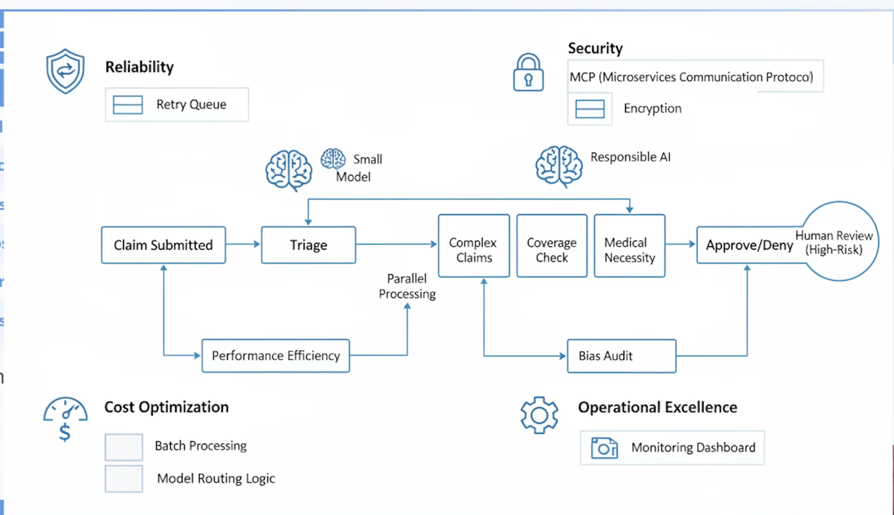
SCENARIO: HEALTH INSURANCE CLAIMS AGENT
Reliability:
- Queue + retry if model down;
- auto-approve low-risk, escalate high-risk
Security:
- Claims via MCP;
- PII encrypted;
- role-based patient access
Cost:
- Batch hourly;
- cheap model for triage, expensive for complex
Ops Excellence:
- Dashboard: claims/hour, error rate;
- alert on escalation spikes
Performance:
- Validation,
- coverage,
- necessity run in parallel
Responsible Al:
- Monthly bias audit on denials;
- explanations + appeal instructions
This is what the exam expects: applying all six lenses to one design.
AI ACROSS POWER PLATFORM
Generative pages & agent feed (model-driven apps)
- Al dynamically renders content — low-code or code-first (React / PCF)
- Agent feed surfaces Al activity in the app sidebar
- WAF: Performance Efficiency + Responsible Al (content must be grounded)
Power Platform Al hub (admin dashboard)
- Visibility into models, token consumption, and policy compliance
- WAF: Operational Excellence + Cost Optimization
Exam Insight
"Track Al usage across teams" → Al hub. "Custom Al in a model-driven app" → generative pages.
AI BUILDER & COPILOT CONTROL IN CANVAS APPS
Al Builder components — prebuilt Al for structured tasks:
- Text recognition, sentiment analysis, object detection, form processing
- Use when the task is repeatable and well-defined
Copilot control — embedded conversational Al in canvas apps
- Use when users need freeform, conversational help
WAF connections:
- Security — data processed by Al models must follow DLP policies
- Cost — Al Builder consumes credits; plan capacity and monitor usage via Al hub
KEY TAKEAWAYS
- Five pillars plus Responsible Al — address all six in every agentic design, not just the ones that seem most interesting
- Reliability and Security are the most critical for agents that call external services — circuit breakers and MCP are must-haves
- Cost Optimization matters at scale — use model routing, caching, and batch processing to control token spend
- Responsible Al is not a feature, it's a foundation — fairness, transparency, accountability, and safety apply to every agent that makes or influences decisions
- Generative pages, Al hub, and Al Builder in canvas apps all connect back to WAF design with performance, security, cost, and responsible Al in mind
4-9 Designing Custom Models in Microsoft Foundry
WHEN TO USE CUSTOM MODELS
Exam Insight
Exam Insight: The exam tests when custom models are justified versus when prebuilt models suffice.
Start with prebuilt.
Fine-tune for domain accuracy.
Go fully custom only when the business case justifies the investment.
| Scenario | Recommended Approach | Rationale |
|---|---|---|
| Standard Q&A, summarization | Prebuilt model (GPT-40, etc.) | Fast, no training needed |
| Domain-specific language (legal, medical) | Fine-tuned model | Better accuracy on specialized terms |
| Proprietary classification or prediction | Custom-trained model | Unique to your data and business logic |
| Cost-sensitive high-volume tasks | Small language model (SLM) | Lower token cost, faster inference |
FOUNDRY MODEL CATALOG
- Model catalog: browse & deploy from Microsoft, OpenAl, Meta, Mistral, and others
- Match model to task requirements, latency, and budget
DEVELOPMENT TOOLS
| Tool | Purpose | Use When |
|---|---|---|
| Prompt Flow | Visual prompt prototyping & pipelines | Rapid experimentation |
| Evaluation | Test against labeled datasets | Measuring accuracy, latency, bias |
| Fine-tuning | Train base model on domain data | Domain-specific accuracy needed |
| Deployment | Managed endpoint with scaling & monitoring | Production readiness |
DESIGN WORKFLOW — DEFINE, PREPARE & FINE-TUNE
- Define the task — classification, extraction, generation, or prediction
- Prepare training data — labeled, high-quality, representative, bias-free
- Select base model - match model size to task complexity from the catalog
- Fine-tune — train on your domain data; Foundry manages compute
- Evaluate — test against held-out data; measure accuracy, latency, bias
- Deploy — publish as managed endpoint with auto-scaling and access controls
- Integrate — connect to agents via MCP or Copilot Studio actions; add monitoring
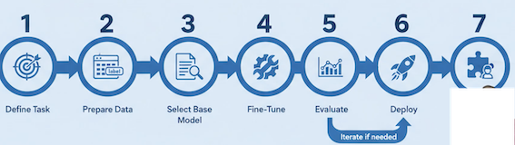
CONNECTING CUSTOM MODELS TO AGENTS
- Copilot Studio: Use custom model as an action (API call to Foundry endpoint)
- Model routing: Route simple requests to SLMs, complex to custom or large models
- Multi-model pipelines: Chain models — one extracts, another classifies, a third generates
- Governance: Version models, audit predictions, monitor drift over time
KEY TAKEAWAYS
- Use custom models only when prebuilt models can't meet domain, accuracy, or cost requirements — the exam rewards pragmatism
- Foundry provides end-to-end tools: model catalog, prompt flow, fine-tuning, evaluation, deployment, and monitoring
- Connect custom models to agents via MCP or Copilot Studio actions and use model routing for cost optimization
- Govern custom models with versioning, prediction auditing, and drift monitoring - production models degrade over time without oversight
2 Introduction to agentic AI business solutions
AI Transformation Framework
- Define business goals
- Develop Al strategy
- Design architecture
- Implement solutions
- Monitor and optimize performance
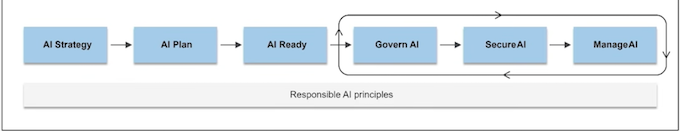
Best Practices for Al Architects
- Start with business outcomes focusing on measurable impact.
- Adopt modular design for flexibility and scalability.
- Prioritize Responsible AI principles: fairness, transparency, accountability.
- Collaborate across teams: data scientists, developers, business leaders.
- Leverage Azure AI services for speed and reliability.
Scaling Al Across the Enterprise
- Automation to streamline deployment and monitoring.
- Standardization using common frameworks and tools.
- Continuous learning enabling models to evolve with new data.
- User training to foster a culture of continuous learning.
Overview of Microsoft AI Technologies
- Microsoft Al technologies empower organizations to build intelligent solutions
- Enhance productivity, improve decision-making, and deliver measurable business value
- Introduces key Azure Al services, development tools, and Copilot solutions
- Tools help businesses innovate, automate, and scale processes
- Support measurable outcomes and enhanced collaboration
Core Components of Microsoft Al Technologies
- Azure Al Services: Azure Machine Learning, Azure OpenAl Service, Azure Foundry
- Tools and SDKs: Azure Machine Learning Studio, SDKs, APIs, CLI, REST APIs
- Microsoft Copilot Solutions: Embedded Al in Microsoft 365 and Dynamics 365
- Copilot automates tasks, generates content, and provides actionable insights
- Enhances productivity across business processes
Phase-by-phase guidance
| Phase | Goals | Key activities | Outputs |
|---|---|---|---|
| Azure AI Services | Provide AI capabilities via APIs and platforms | Develop, train, deploy AI models; access generative AI | Prebuilt APIs, ML models, generative AI services |
| Tools and SDKs | Enable AI integration and automation | Use SDKs, APIs, CLI, REST APIs for development and workflows | Visual interfaces, multi-language SDKs, automation tools |
| Copilot Solutions | Embed AI to enhance productivity | Automate tasks, generate content, provide insights | Improved business process efficiency and insights |
Microsoft Al Ecosystem
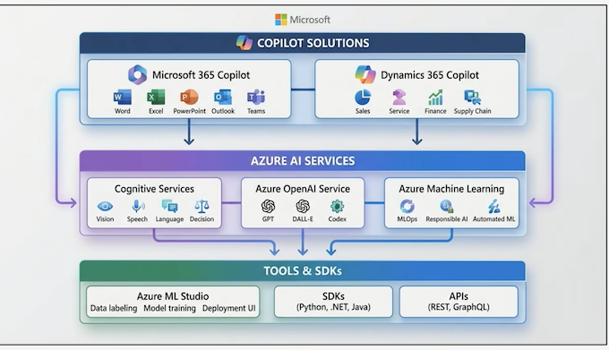
Best Practices for Business Value
- Start with measurable business outcomes
- Implement Al responsibly: fairness, reliability, safety, privacy, security, inclusiveness, transparency, accountability
- Leverage cloud scalability for enterprise-wide adoption
Identify Out-of-the-Box (OOB) Microsoft Al Agent & Resources
Overview
- Microsoft offers out-of-the-box Al agent resources to accelerate Al implementation.
- Resources include prebuilt agents, templates, and tools integrated vith Azure Al and Copilot Studio.
- These agents reduce development time, ensure compliance, and enable enterprise scalability.
Microsoft Al Agent Ecosystem
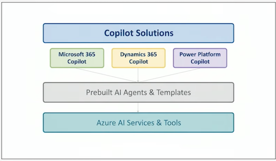
OOB Al Agent Resources
- Prebuilt Agents: Automate common business workflows
- Copilot Studio: Customize and deploy Al agents
- Azure Al Services: Vision, Speech, Language, Decision-making capabilities
- Scenario Library: Best practices and adoption guides
Best Practices
- Start with business outcomes before selecting tools
- Use prebuilt agents for quick deployment
- Ensure Responsible Al principles: Fairness, Reliability and Safety, Privacy and Security, Inclusiveness, Transparency, Accountability
- Leverage Azure Al for scalability and compliance
Summary
Introduction to Agentic Al Business Solution Architecture
- Explain the architect's role in driving Al adoption and transformation.
- Identify key responsibilities of an Al architect in business contexts.
- Understand how architects align Al solutions with organizational goals.
- Apply best practices for scaling Al across enterprise environments.
- Identify core Microsoft Al services and tools.
- Explore Microsoft Copilot solutions and their business value.
- Understand how generative Al unlocks productivity in enterprise environments.
- Identify OOB Microsoft Al agent resources available for business solutions.